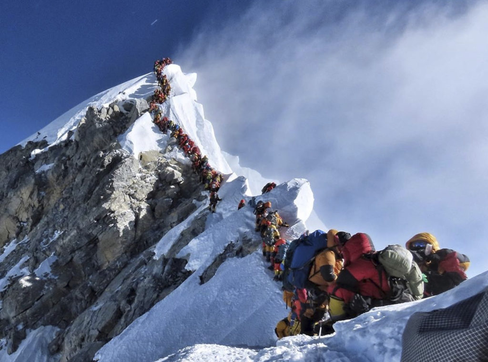

Why gear usage should be as barebones as possible.
I am a minimalist in most aspects of my life, but especially when it comes to training. I don't believe in specialized machines that help hit the long head of the small muscle that is rarely used; I don't believe in packing more than the bare necessities; I don't believe that gear should be a deciding factor on whether or not an objective is achieved, besides satisfying the bare minimum requirements.
The purpose of gear is two-fold. First, the gear allows an objective to be accomplished safely. Take crampons, which are used to improve traction on snow and ice. If crampons weren't used, many routes instantly become extremely dangerous or altogether unclimbable, hence the requirement. Cold-weather clothing also fits under the safety umbrella, helping to prevent hypothermia or frostbite. Second, the gear is required to complete the objective, where the objective is not too specific (at some point specialization in both training and gear is required to achieve extremely specific goals). Without gear, it would be extremely difficult or impossible to achieve.
Note that comfort is not mentioned in either point. While it's nice to be cool/warm in extreme weather or high on oxygen deep in the Himalayas, by no means is it a requirement and in a sense, takes away from the vividness and prestige of some efforts. Once again, the only purposes of gear are to achieve objectives safely and make said objectives obtainabale. Once those are fulfilled, gear should play no role in whether or not an objective is achieved: personal performance should be the sole controllable factor in determining success.
Mt. Everest is contentious among a few circles due to the inexperienced mountaineers it attracts. They come in hordes with a few insignificant peaks under their belt hoping to bag the Roof of the World, have Sherpas set the fixed ropes and carry their supplementary oxygen, then do the rest of the work by walking up. By no means could any of them summit Everest without the gear (Sherpas are included in the word "gear"). They rely on external help rather than training more and summiting legitimately. In Into Thin Air, Anatoli Boukreev is quoted as saying:
If client cannot climb Everest without big help from guide, this client should not be on Everest. Otherwise there can be big problems up high.
Abiding by bare minimum gear requirements levels the playing field and ensures honesty across and within competitors. There's no telling who the better rider is when one is on a beater bike and the other on a top-of-the-line road bike (that is, unless the beater rider beats the road bike, then there's no question). There's no telling how strong someone is when they're using a squat suit, knee sleeves, belt, and poor form. There's no telling how fast someone is when they're artificially improving running economy. Excessive gear muddies the waters, blurring the lines of what the person is actually contributing versus the gear.
Training often follows a Pareto distribution in that a majority of adaptations result from a minority of the work, unless the work lacks variation. (I'll hold off on generalizing numbers for each, as the typical 80-20 doesn't necessarily apply to all athletes and can swing wildly in either direction for both numbers. Additionally, the distributions are individualized to specific systems/muscles, not necessarily the athlete as a whole, e.g., 80% of cycling fitness improvements is due to activity X itself, which takes up some percentage of training devoted to improving cycling fitness.)
In looking at specialized equipment and using strength training as an example, there are a plethora of options out there. Bars for hitting this muscle better, bars for making this movement easier, attachable grips to train that one movement that's never done outside of a gym. The list goes on and will continue to be added to.
But these aren't needed. The wheel has already been invented and in use for decades by athletes and trainers more experienced and knowledgable than the guy touting the new Bowflex he just got. To get strong, use a barbell. To go long, go running/cycling/swimming/rowing/hiking. To get flexible, stretch. To lose weight, put the fork down. None of these objectives require expensive, complex tools to achieve. All of these objectives can be achieved with minimal to no gear.
It seems many athletes search for the magic pill when buying gear, expecting there to be a goody box inside the packaging that instantly improves their training. And sometimes the goody box is the gear itself, adding weight or dropping time just like that. But the athlete didn't do anything to earn those precious improvements: they simply paid money. They didn't sweat or fight or risk anything in the process. They used the gear as a crutch to mask other weaknesses—physical and mental—and yet proceed to boast about their illegitimate accomplishments.
I encourage the reader to abide by my gear purposes of safety and requirement for one month and note down the results.